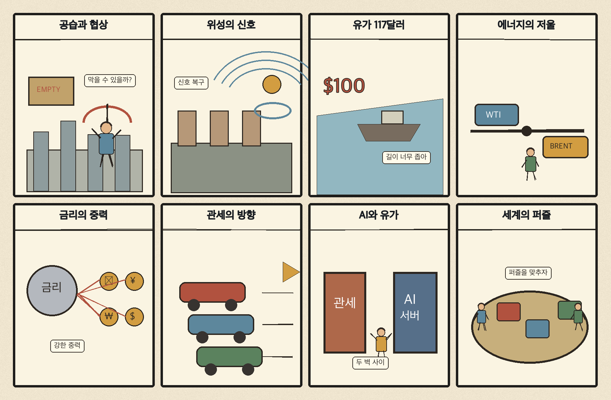
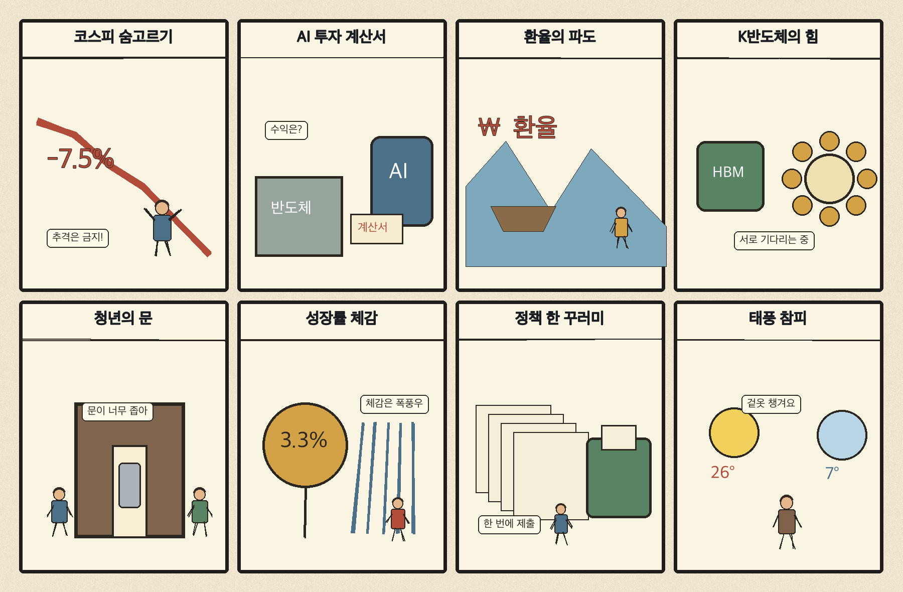

01
크라우드스트라이크 · 238.50→257.57달러 · +8.00%
내용요약 시가 대비 +8.00%로 조사 종목 중 가장 강했습니다. 당일 인공지능 기반 보안 수요 보도와 함께 사이버보안 업종의 상대강도가 두드러졌습니다.
예상여파 국내 보안주는 관심을 받을 수 있지만 미국 단일 종목 급등을 국내 실적 수혜로 곧바로 연결하지 말아야 합니다.
MORNING_BRIEFING_20261024
작성 시각: 2026-10-24 06:33 KST · 직전 미국 정규장과 2026-10-24 KST 당일 공개 기사 기준
직전 미국 정규장인 10월 23일 뉴욕증시는 다우 -1.23%, S&P 500 -0.52%, 나스닥 -0.21%로 하락했습니다. 중동 확전 우려로 브렌트유가 116달러대를 기록하며 물가와 금리 부담이 커졌습니다. 한국 증시는 주말 휴장입니다. 다음 거래일에는 에너지 상대강도와 항공·운송·소비의 비용 압박, 외국인 수급을 함께 확인해야 합니다.
| 지수 | 종가 | 등락률 | 한국 증시 시사점 |
|---|---|---|---|
| 다우존스 | 52,215.16 | -1.23% | 고유가·금리 부담과 경기민감주 약세 |
| S&P 500 | 7,623.68 | -0.52% | 에너지 강세와 기술주 선별 흐름 |
| 나스닥 종합 | 25,955.34 | -0.21% | 에너지 강세와 기술주 선별 흐름 |
고유가 충격이 경기민감주와 금리 기대를 압박했습니다.
중동 확전 우려로 6개월 만의 최고 수준을 기록했습니다.
전일 시가 대비 +2.72% 회복했지만 KOSDAQ은 -1.62%였습니다.
공식 추천 없이 다음 거래일 유가·환율·수급을 준비합니다.
10월 23일 보고서는 급변동과 필수 수급·컨센서스·유사 조건 표본 부족으로 공식 추천을 내지 않았습니다. 사후에 종목을 추가하지 않습니다.
| 시장 | 종가 | 등락률 | 기준 |
|---|---|---|---|
| KOSPI | 5,550.30 | +0.30% | 10월 23일 · 시가 대비 +2.72% |
| KOSDAQ | 751.69 | -1.62% | 10월 23일 · 시가 대비 +0.45% |
| 다우존스 | 52,215.16 | -1.23% | 미국 10월 23일 정규장 |
| S&P 500 | 7,623.68 | -0.52% | 미국 10월 23일 정규장 |
| 나스닥 종합 | 25,955.34 | -0.21% | 미국 10월 23일 정규장 |
크라우드스트라이크가 시가 대비 +8.00%로 조사군 최상위였습니다.
다이아몬드백 +3.40%, 셰브론 +2.20%, 엑슨모빌 +2.14%가 올랐습니다.
코인베이스가 시가 대비 -2.11%로 위험자산 경계의 영향을 받았습니다.
슈퍼마이크로 -2.08%, 넷플릭스 -1.73%, 홈디포 -1.59%였습니다.
내용요약 시가 대비 +8.00%로 조사 종목 중 가장 강했습니다. 당일 인공지능 기반 보안 수요 보도와 함께 사이버보안 업종의 상대강도가 두드러졌습니다.
예상여파 국내 보안주는 관심을 받을 수 있지만 미국 단일 종목 급등을 국내 실적 수혜로 곧바로 연결하지 말아야 합니다.
내용요약 시가 대비 +3.40% 올랐습니다. 브렌트유 116달러대와 중동 공급 차질 우려 속 에너지 생산주가 강했습니다.
예상여파 정유·에너지 업종에는 단기 우호적이지만 유가 급등 뒤 변동성과 정책 대응을 경계해야 합니다.
내용요약 시가 대비 +2.20% 상승하며 국제유가 급등의 수혜를 반영했습니다.
예상여파 에너지 대형주의 상대강도는 이어질 수 있으나 고유가가 시장 전체에는 비용·금리 부담이라는 점을 함께 봐야 합니다.
내용요약 시가 대비 -2.11% 하락했습니다. 고유가와 국채금리 경계로 위험자산 선호가 약해진 흐름과 맞물렸습니다.
예상여파 암호자산 관련주는 주말에도 가격이 움직이므로 다음 거래일 갭 위험을 특히 경계해야 합니다.
내용요약 시가 대비 -2.08% 하락해 인공지능 서버주 안에서도 선별과 차익실현이 이어졌습니다.
예상여파 국내 서버·부품주는 인공지능 기대만으로 동조화하기보다 주문·마진·재고 지표를 확인해야 합니다.
토요일로 한국 증시는 휴장입니다. 미국장에서 에너지주는 강했지만 다우가 1.23% 하락했고 브렌트유가 116달러대로 올라 다음 거래일에는 정유·에너지의 상대강도와 항공·운송·화학·소비의 비용 부담이 엇갈릴 수 있습니다. 주말 중동 뉴스와 국제유가, 원·달러 움직임에 따라 월요일 시초가 갭이 커질 수 있으므로 장전 급등 종목 추격보다 외국인 현·선물 수급과 시가 안정 여부를 먼저 확인합니다.
오늘은 추천 없음 — 현금 관망
토요일 휴장으로 당일 시가 진입과 1일 수익률을 검증할 수 없습니다. 또한 전일까지의 외국인·기관 수급, 컨센서스 변화와 30건 이상 유사 조건 표본을 함께 확보해 종합점수 75점·상승확률 60%·예상 손익비 1.5를 모두 검증한 종목이 없습니다.
관심 연결종목 정유·에너지와 사이버보안은 관찰 대상일 뿐 매수 추천이 아닙니다. 월요일 장전 급등 또는 갭 상승 종목의 추격매수를 금지합니다.
브렌트 116달러대 이후 주말 추가 뉴스와 공급 차질 여부를 봅니다.
유가발 물가 압력이 통화정책 기대를 어떻게 바꾸는지 확인합니다.
에너지 강세와 비용민감 업종 약세가 과도하게 반영되는지 봅니다.
제주·남부의 강한 비, 항공·선박과 농작물 피해에 대비합니다.
핵심 요약: 산업 인공지능의 중심이 공장 데이터와 현장 적용, 규제·보안 대응으로 이동하고 있습니다. 반도체 경쟁력도 단기 기대보다 연구개발·인재·공급망의 지속성이 핵심입니다.
내용요약 김정호 교수가 한국 반도체 성장의 배경을 기술력과 산업 여건의 결합으로 분석한 당일 보도입니다.
예상여파 장기 경쟁력은 운보다 연구개발·인재·공급망 투자로 증명돼야 하며, 단기 주가 기대와 실제 실적을 분리해 볼 필요가 있습니다.
내용요약 국내 200개 기업이 참여한 산업 인공지능 전시가 제조 현장의 데이터 활용과 자동화 사례를 공개했다는 보도입니다.
예상여파 산업 인공지능의 경쟁축이 모델 성능에서 공장 데이터 확보와 현장 적용 능력으로 이동할 수 있습니다.
내용요약 기업이 인공지능을 도입하기 전에 규제와 법률 위험을 점검하도록 소프트웨어·법률 기업이 협력한다는 보도입니다.
예상여파 인공지능 거버넌스와 준법 솔루션이 새 기업용 시장으로 성장할 수 있지만 실제 고객 도입과 계약 규모를 확인해야 합니다.
내용요약 방산 기술 보안 현장에서 인공지능 기반 공격에 인공지능으로 대응해야 한다는 보안 전략이 제시됐습니다.
예상여파 방산·공공망의 탐지 자동화 수요가 늘 수 있으나 오탐과 책임 소재, 기밀 데이터 관리가 함께 과제가 됩니다.
내용요약 인공지능으로 소프트웨어 취약점 발견이 쉬워지자 비트코인 코어가 보안 공개 정책을 조정했다는 보도입니다.
예상여파 인공지능이 공격 비용을 낮추는 만큼 오픈소스 프로젝트와 금융 인프라의 선제 패치·공개 절차가 더 중요해집니다.
핵심 요약: 중동 확전 우려가 브렌트유를 116달러대로 끌어올려 세계 증시와 금리 기대를 압박했습니다. 우크라이나에서는 협상 논의와 공습이 병행되고, 미국의 캐나다 관세 일부 완화 움직임도 나왔습니다.
내용요약 중동 확전 우려로 브렌트유가 배럴당 116달러대로 오르며 6개월 만의 최고 수준을 기록했다는 종합 보도입니다.
예상여파 고유가가 세계 물가와 국채금리를 자극하면 금리 인하 기대가 늦춰지고 항공·운송·소비 업종의 비용 부담이 커질 수 있습니다.
내용요약 종전 협상 재개 논의와 별개로 러시아와 우크라이나가 상대 수도를 겨냥한 대규모 공습을 이어갔다는 보도입니다.
예상여파 협상과 군사 행동이 병행되면 휴전 기대의 신뢰도가 낮아지고 에너지·곡물·유럽 안보의 위험 프리미엄이 유지될 수 있습니다.
내용요약 미국이 캐나다산 일부 품목에 대한 관세 철폐를 추진한다는 보도입니다.
예상여파 부분 완화는 북미 공급망 비용을 낮출 수 있지만 선거와 품목별 예외에 따른 정책 변동성은 남습니다.
내용요약 중동 전쟁과 유럽 시위 여파로 유럽 명품기업 주가가 하락했다는 국제 보도입니다.
예상여파 관광·소비 심리 위축과 물가 부담이 이어지면 글로벌 소비재와 유통 업종의 실적 눈높이가 낮아질 수 있습니다.
내용요약 뉴욕증시가 중동 확전과 국제유가 급등으로 하락해 다우가 1.2% 넘게 밀렸다는 마감 보도입니다.
예상여파 에너지주는 상대 강세를 보일 수 있지만 유가발 인플레이션이 시장 전반의 밸류에이션과 다음 주 통화정책 기대를 압박합니다.

핵심 요약: 한국 경제는 3분기 성장률과 정책 체감도가 다음 판단 기준입니다. 미국 주식으로의 자금 이동, 환율·유가·물류비의 동시 부담을 살피는 한편 주말에는 태풍 참피로 인한 제주·남부 피해에 대비해야 합니다.
내용요약 정부가 한국 경제의 새로운 도약 기회를 국민이 체감하도록 정책 집행에 힘쓰겠다고 밝힌 공식 발표입니다.
예상여파 정책 효과는 구호보다 투자·고용·소비 지표와 집행 속도로 확인해야 하며 수혜 기대만으로 종목을 추격해서는 안 됩니다.
내용요약 한국은행 일정을 앞두고 3분기 성장률과 시장의 높아진 기대 수준을 점검한 당일 기사입니다.
예상여파 성장률이 기대를 밑돌면 내수·금리 전망이 흔들릴 수 있고, 웃돌더라도 수출과 내수의 질적 균형이 중요합니다.
내용요약 10월 들어 국내 투자자의 미국 주식 매수가 48억달러에 이르며 국내 상장 해외형 상품 경쟁도 심화됐다는 보도입니다.
예상여파 해외 자금 이동은 국내 증시 수급과 환율에 영향을 줄 수 있어 환헤지 비용과 쏠림 위험을 함께 점검해야 합니다.
내용요약 환율·유가·물류비가 동시에 오를 가능성에 대비해 기업 대응체계를 재설계해야 한다는 분석입니다.
예상여파 원가 전가력이 낮은 중소기업과 항공·운송·화학 업종의 마진 압박이 커질 수 있습니다.
내용요약 태풍 참피의 영향으로 제주와 남부에 강한 비가 예상되고 제주에는 최대 250㎜가 예보됐습니다.
예상여파 주말 항공·선박 운항, 저지대 침수와 농작물 피해에 대비하고 최신 기상특보를 확인해야 합니다.
